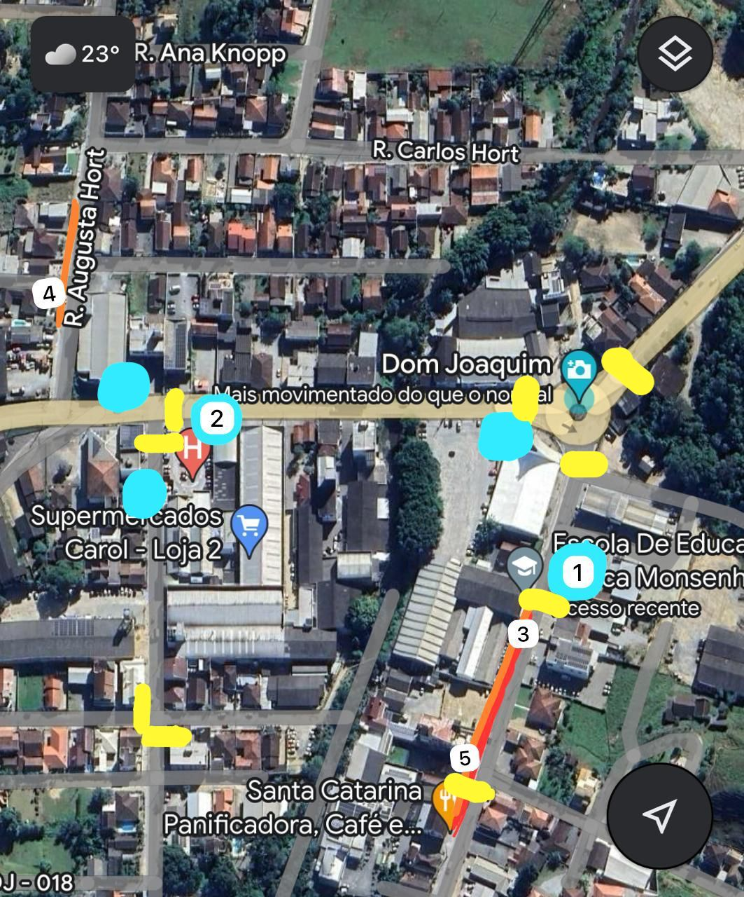

Analisando as ruas do bairro Dom Joaquim
conseguimos perceber, pontos de ônibus, ciclofaixas e calçadas para os pedestres.
O bairro apresenta ruas pavimentadas em suas principais circulações.
Ponto de ônibus em frente a Escola Monsenhor Gregório Locks/ Ponto de ônibus em frente ao hospital.
Ciclofaixa localizada na Rua Ludovíco Merico.
Analise •Pontos de ônibus em situações precários; •Ciclofaixas extremamente compactas, pode ocasionar acidentes; •Calçadas estreitas e com obstáculos;
Mapa das imagens Azul: Pontos de ônibus, imagens 1 e 2 Laranja: Calçadas, imagens 4 e 5 Vermelho: Ciclofaixas, imagem 3 Amarelo: Faixa de pedestre